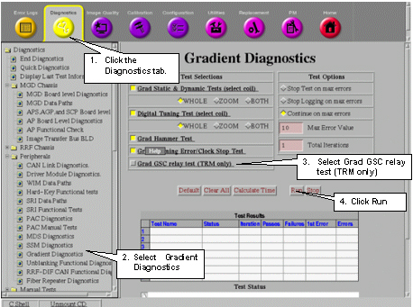

Proprietary to General Electric Company
Direction 5670006, Rev# 1
Discovery MR750w GEM Service Methods
Module Version 1.0, Version Date 5/3/07
Proprietary to General Electric Company |
This tests the functionality of the Gradient Switch Controller (GSC) and the communication link between the GP and the GSC. This test can only be run on TwinRoom systems since only TRM systems are equipped with a Gradient Switch Controller. The diagnostic first verifies that the GP can communicate with the GSC. The GSC is then commanded to engage and release its coil relays and to verify that the relays are working correctly.
To access this test, see Illustration 1, below.
Illustration 1: ACCESSING GRAD GSC RELAY TEST
